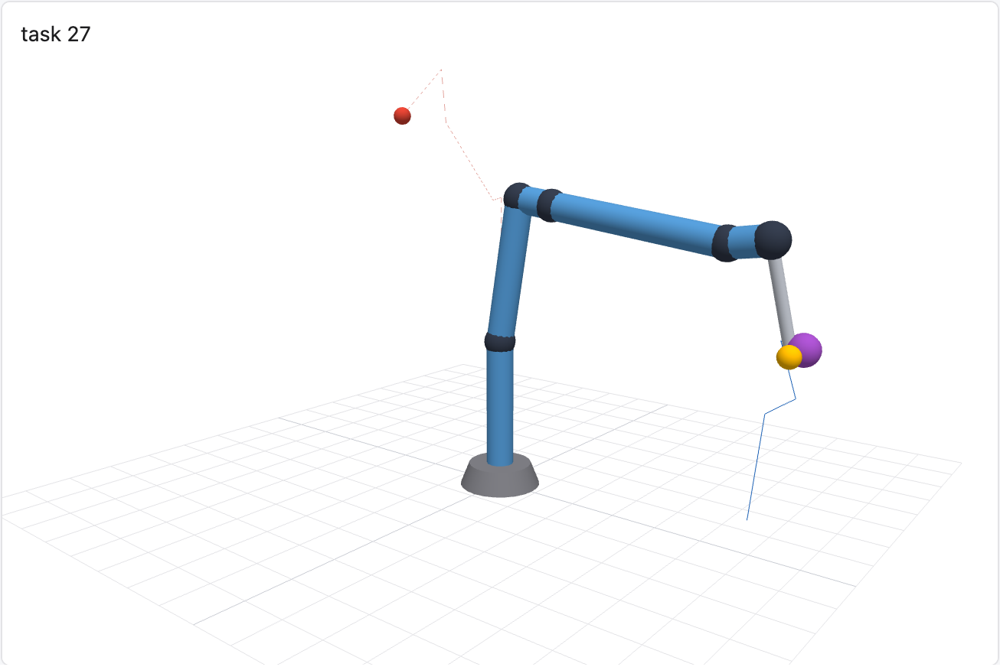
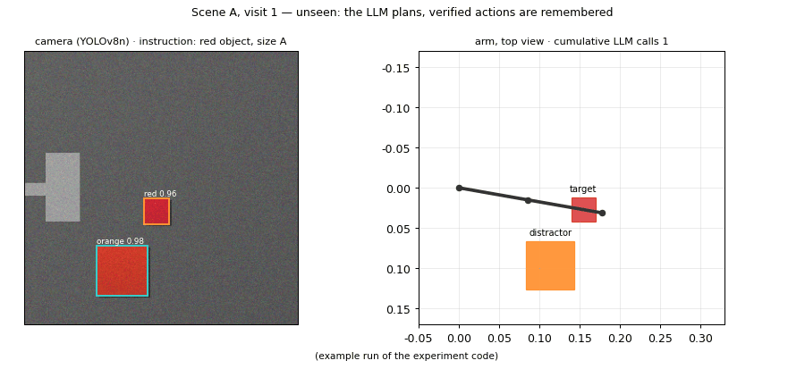

Verify, remember, and decide how much to compute
검증된 경험을 기억해 계산을 줄이고, 기억이나 상태가 틀릴 때 무엇이 막는지를 본 예비 연구입니다.
An LLM can plan robot motions, but calling it for every step is slow and its plans must be checked before execution. I asked three questions: where should memory sit to save computation, what stops a wrong memory, and where should verification sit — before planning or after.

System 구조
The planner receives one committed target; the gates receive the uncertainty. A wrong memory is dropped when perception disagrees with it.
1 · Memory where the decision is made 기억은 결정하는 자리에
Memory of verifier verdicts changed costs only when it sat at the decision or the action, not in the prompt. On a 2-link arm, LLM calls fell 60 → 24 and on a 3D arm 33 → 12, with every task still solved (GPT-6.1 Pro, 30 tasks).

2 · With a camera, touch and memory 카메라 · 촉각 · 기억을 한 고리로
75 tasks × 7 conditions on the same frames. Familiar scenes became nearly free; unseen scenes reused actions verified elsewhere; when objects were swapped so that memory pointed at the wrong one, a touch-width check cut wrong transports 6 → 1, and a perception–memory conflict check removed the wrong grasps altogether (20 → 0) without extra LLM calls.



3 · Before or after planning? 계획 전 검증 vs 계획 후 검증
I compared a HEART-style check before planning (expert agents answer feasibility questions that are injected into the planner) with my forward-kinematics filter after planning, and then broke the assumption both rely on: a shoulder reading off by +0.15 rad. Both were fooled — the kinematic filter rejected nothing across two task sets — and an independent fingertip sensor restored 7–8 of 8 tasks with about a third of the LLM calls.


Setup 설정
Simulated arms; timings measured on an Apple M5 Pro laptop; one planner model per experiment. Pre-registered criteria and every run are kept with the code.